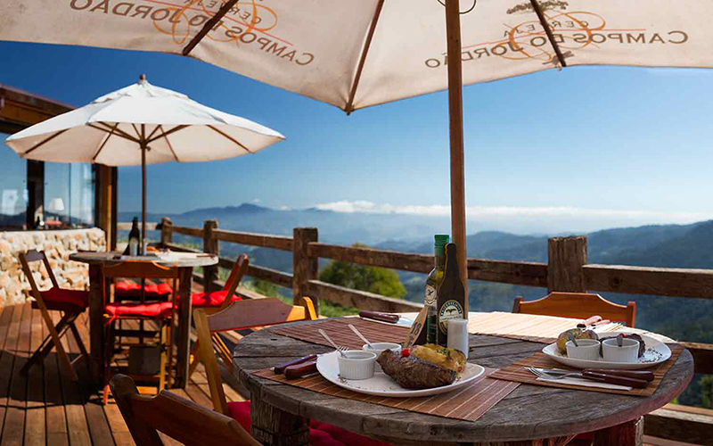

A gastronomia é um dos atrativos de Campos do Jordão, pois há inúmeros restaurantes excelentes na cidade, para os mais variados gostos. Com tantas opções, chega ser difícil escolher em qual restaurante comer. Para te ajudar fizemos uma seleção dos melhores restaurantes para você saber onde comer em Campos do Jordão.
O clima ameno da Serra da Mantiqueira durante quase todo o ano contribui para que o visitante possa apreciar uma intensa experiência gastronômica na cidade, incluindo sequências de fondue, carnes nobres, comida italiana e deliciosas sobremesas.
1.Baden Baden
A nossa lista de onde comer em Campos do Jordão começa com a cervejaria artesanal mais conhecida da cidade. O Baden Baden existe desde 1985 e foi a primeira cerveja gourmet a ser produzida no Brasil. A choperia em estilo alemão fica localizada no ponto mais badalado da Vila Capivari. É um ambiente descolado e descontraído. As mesas são bem disputadas, mas vale muito a pena aguardar por um lugar e experimentar uma saborosa cerveja, observando o movimento do local. O cardápio é bem variado. Além da comida tipicamente alemã, inclui também outros pratos internacionais e nacionais. Há ainda opções vegetarianas, veganas e Menu Kids. Sem dúvidas, a estrela da casa é a cerveja, que harmoniza muito bem com os pratos do restaurante.
2.Restaurante Ludwig
O Ludwig é outro restaurante charmoso, aconchegante e romântico para comer em Campos do Jordão. O ambiente lembra uma casa no campo com toques de requinte e sofisticação.
O restaurante faz parte do grupo do Prato da Boa Lembrança – ao escolher o prato, normalmente feito com ingredientes tradicionais, o cliente é presenteado com uma peça exclusiva de cerâmica após a refeição.
Como já se pode imaginar, o restaurante serve um excelente e bem servido fondue, com opções salgadas e doces. Além disso, há pratos de carnes nobres e caças, peixes, frutos do mar e massas.
3.Café Palácio

No alto da Serra da Mantiqueira, em Campos do Jordão com magnífica vista panorâmica das montanhas o Restaurante Bonaza Grill possui uma decoração singular no conceito prime-rustic, em ambiente aconchegante e tranquilo, totalmente propício para quem deseja uma experiência completa e não apenas uma refeição.